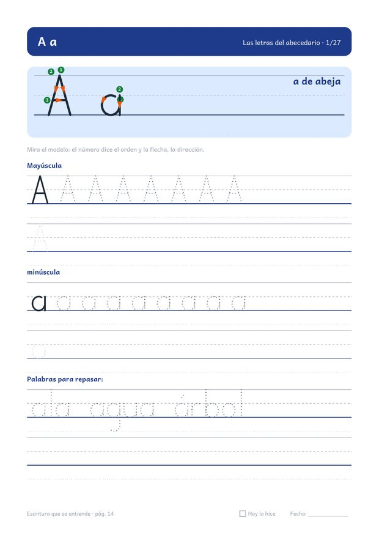
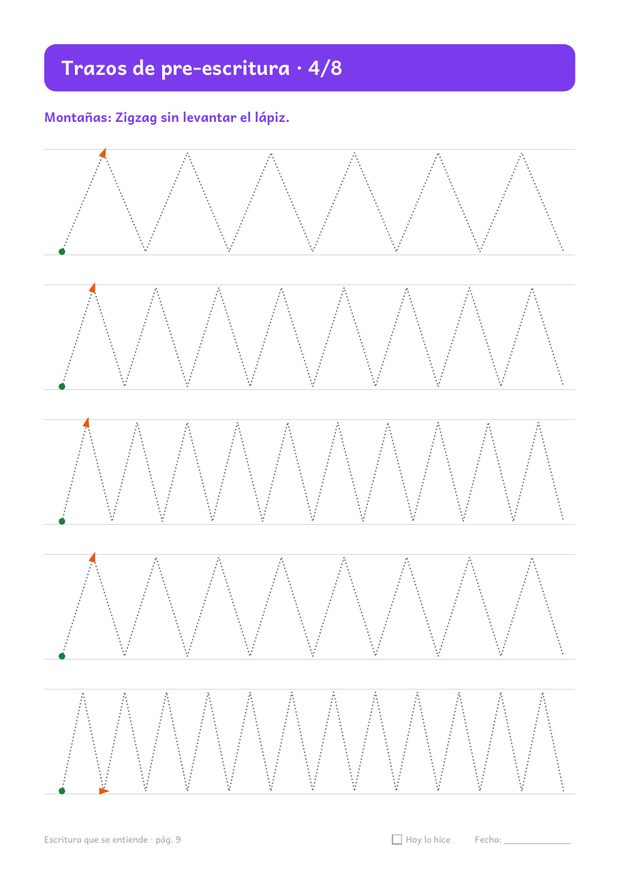
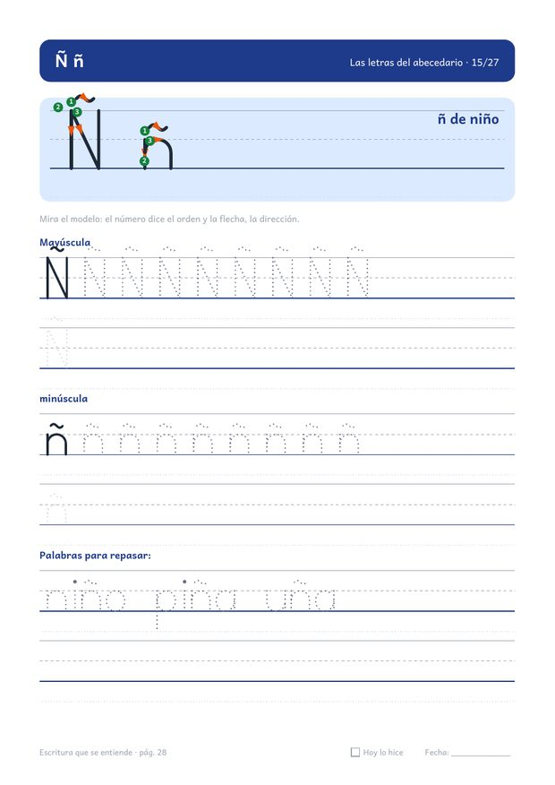
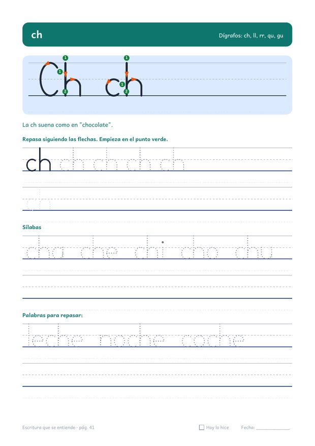
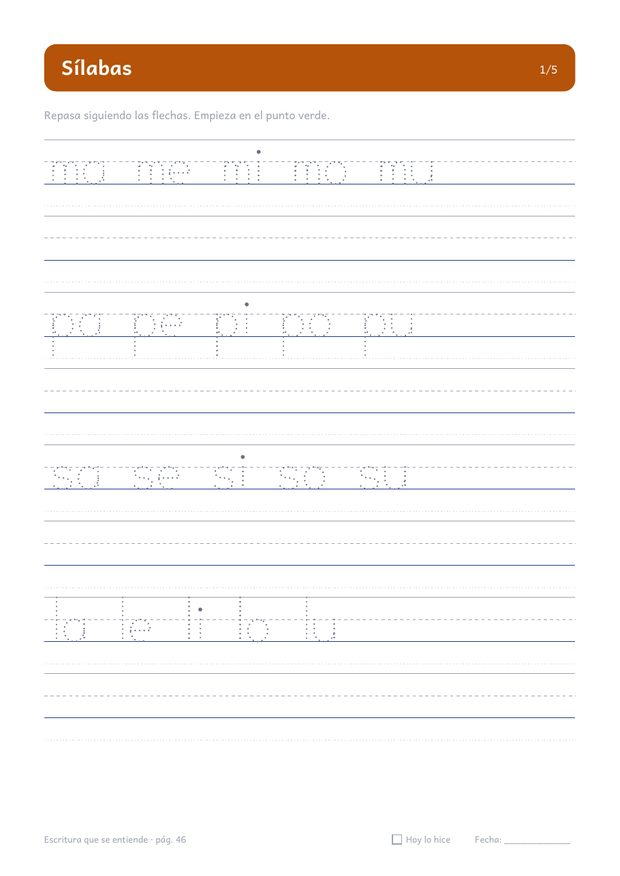
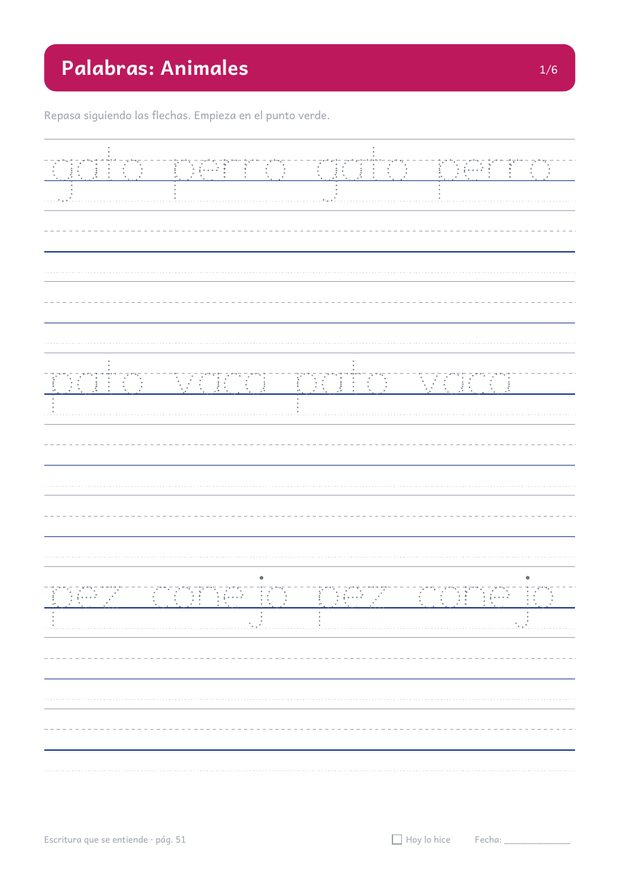
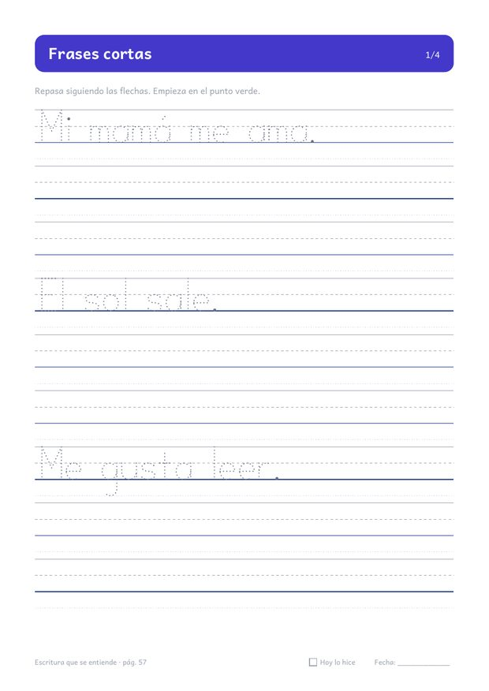
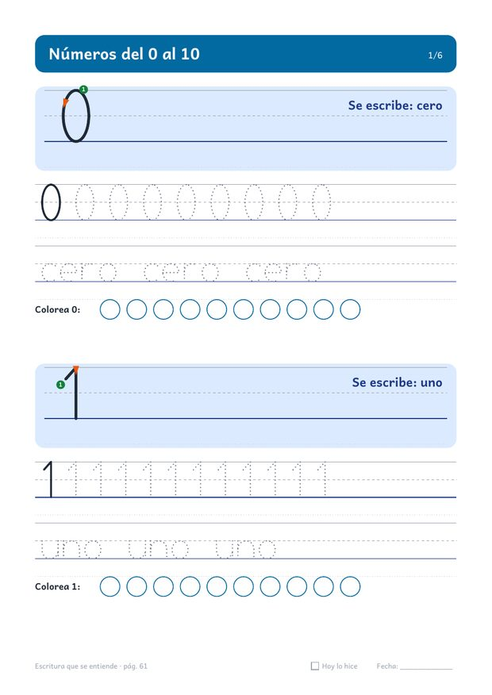
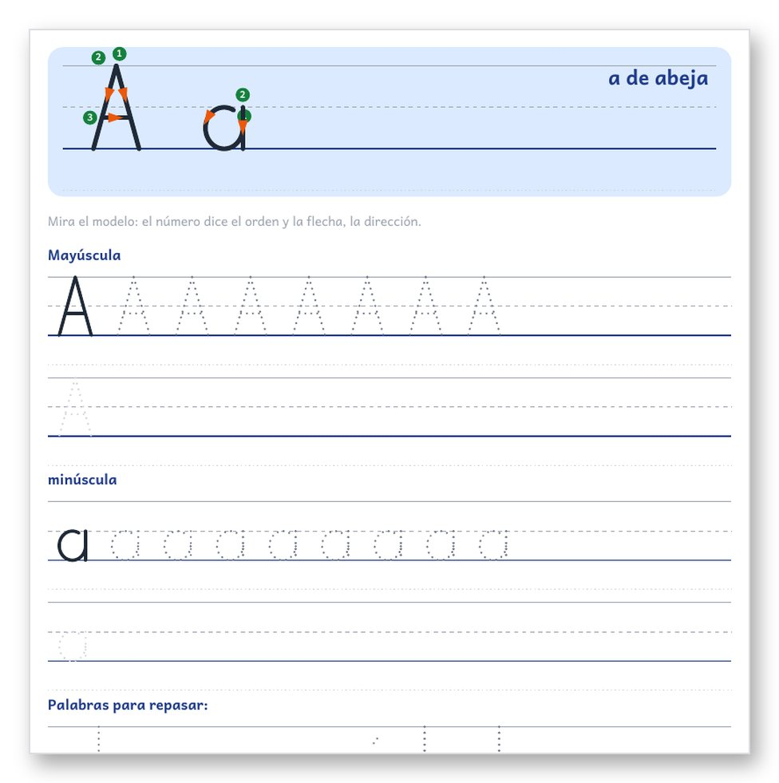

Cuando cuesta entender lo que escribe
Una «a» parece una «o», las letras se salen del renglón o las palabras quedan pegadas. En ese momento, una indicación concreta ayuda más que repetir «escribe más bonito».
Empieza por mostrar dónde apoyar el lápiz, en qué orden hacer los trazos y cómo seguir la línea.
Así son las páginas por dentro
Estas son páginas reales del kit. Fíjate en cómo se marca el inicio de cada trazo.









El punto verde dice dónde empezar. El número, el orden. La flecha, la dirección.
Primero repasa la línea punteada. Después escribe sin ayuda en el renglón vacío. Las letras se "sientan" en la línea azul.
Qué incluye
- Guía para la familia · 2 págs.postura, pinza del lápiz, ritmo y cómo acompañar
- Así escribo hoy / Así escribo ahora · 2 págs.para comparar la propia letra, sin presión
- Trazos de pre-escritura · 8 págs.líneas, zigzag, olas, puentes, bucles y espirales
- Las 27 letras · 27 págs.mayúscula y minúscula con número y flecha, de la a a la z con la ñ
- Dígrafos · 5 págs.ch, ll, rr, qu y gu
- Sílabas · 5 págs.20 familias silábicas
- Palabras · 6 págs.animales, comida, casa, escuela, cuerpo y familia
- Frases cortas · 4 págs.12 frases para copiar
- Números del 0 al 10 · 6 págs.trazo, nombre y conteo
- Fichas de repaso · 5 págs.abecedario, parejas, nombre, dictado y autorrevisión
- Calendario y registro · 2 págs.4 semanas con casilla "Hoy lo hice"
- Certificado de práctica · 1 pág.para celebrar el esfuerzo
Cómo practicar en casa
Para quién es
- Niños y niñas de 6 a 8 años que están aprendiendo o reforzando la letra de imprenta.
- Familias que quieren una rutina corta y clara, sin inventar ejercicios.
- Quien prefiere practicar en papel, lejos de las pantallas.
Para quién no es
- Si buscas letra cursiva (ligada): este kit trabaja la letra de imprenta.
- Si buscas un tratamiento: es material de práctica y no reemplaza a un docente ni a un profesional.
- Si esperas resultados en un número fijo de días: cada niño tiene su ritmo.
días
Garantía de 7 días
Puedes solicitar el reembolso directamente en Hotmart dentro de los 7 días posteriores a la compra.
Preguntas frecuentes
¿Cómo recibo el kit?
Hotmart te envía el acceso por correo electrónico una vez confirmado el pago.
¿Para qué edad es?
Está pensado para niños y niñas de 6 a 8 años. Los trazos de pre-escritura también sirven para empezar antes, con acompañamiento.
¿Es letra cursiva?
No. Es letra de imprenta (script). Si en su escuela usan cursiva, puedes consultar con su docente.
¿Cuánto tiempo por día?
Recomendamos 10 a 15 minutos, 4 o 5 días por semana. Mejor poco y seguido.
¿Sirve para zurdos?
Sí. La guía explica cómo inclinar la hoja y colocar la mano.
¿Reemplaza a un profesional?
No. Es material de práctica en casa. Si hay dolor o dificultades persistentes, conversa con la escuela o con un profesional.
¿Qué medios de pago hay?
Los medios disponibles aparecen en el checkout de Hotmart según tu país.
¿Y si no me gusta?
Tienes 7 días de garantía para pedir el reembolso en Hotmart.
Empieza con la primera página
Escritura que se entiende
- 76 páginas en PDF imprimible, en A4 y Carta.
- Guía para madres, padres, abuelos y quienes acompañan la práctica.
- Descarga inmediata y garantía de 7 días en Hotmart.
Consulta el precio y los medios de pago disponibles para tu país en Hotmart.